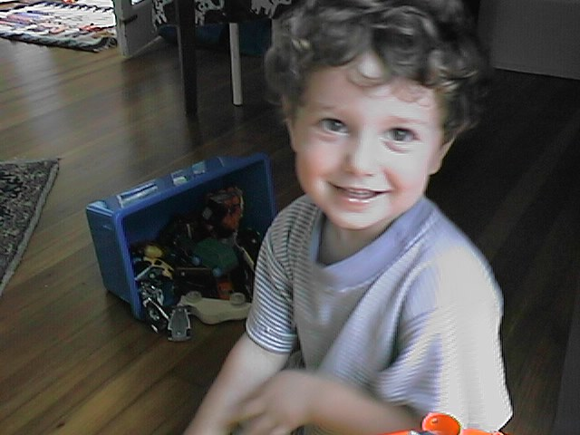

July 31, 1999
Here are some pictures taken mostly on July 31, a hot steamy day. The
first ones are at home. Notice our new swingset/jungle gym (purchased by
Norman at a tag sale). We went to a birthday party for one of Roger's
friends. It was hot but that didn't slow the kids down a second. They
frolicked in a ball pit and jumped in an air jumping thing. The hosts
really went all out and fed us well to boot. It was really hot, sweaty
hot just standing still in the shade. We rounded out the day with a
stop at David and Linne's, Leigh's Uncle and Aunt. They live in Stamford
and have a beautiful cool swimming pool. Roger is getting very
comfortable in the water. He jumps off the side and doesn't mind being
under water for long periods. He's taking a swimming class at the YMCA
so maybe by the end of the summer he'll be swimming. Mattie won't go
near the water. Doesn't like it in the least. He likes David and Linne
and he loves their cats. The pictures of Matt at the party make it look
like he had a great time. We only took pictures when he was on. Matt is
intimidated by Roger's friends and even a bit scared around other kids
younger than he. He would only go in the ball pit and the jumping pit
when it was limited to Roger and him or Leigh (a good sport) and him.
But, as you can see from the pictures, he did have some great times and
that makes it all worth it.
